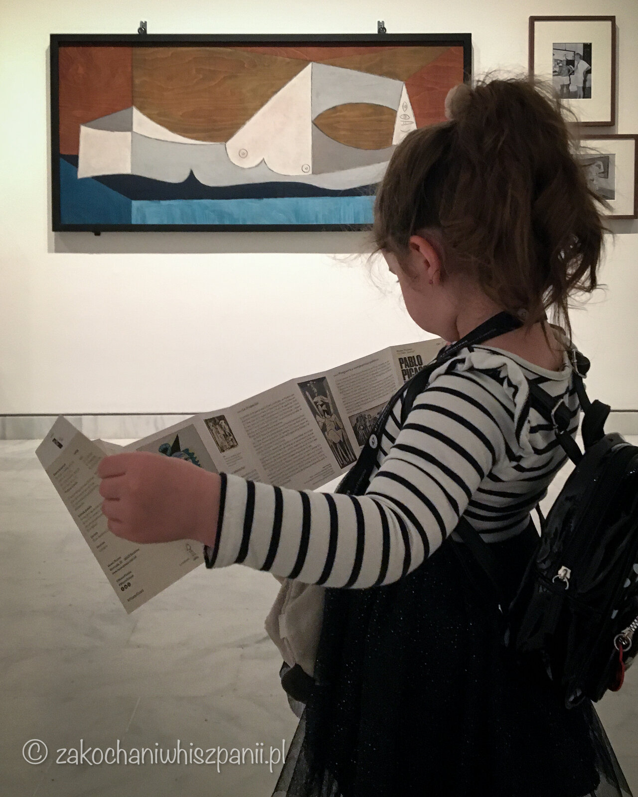

Muzeum Picassa w Barcelonie - Museu Picasso de Barcelona
Pablo Picasso - co warto wiedzieć o artyście?
Pablo Ruiz Picasso urodził się w Maladze w 1881 roku, zmarł we Francji w 1973 roku. Hiszpański malarz, rzeźbiarz, ceramik, grafik. Jeden z najbardziej znanych na świecie malarzy XX wieku. Współtwórca kubizmu. Ojciec kilkorga dzieci w tym Palomy Picasso, hiszpańsko-francuskiej projektantki. Jako mała dziewczynka znalazła się na obrazach ojca, Paloma z pomarańczą i Paloma w błękicie.
Historia powstania Muzeum Picassa w Barcelonie.
Dlaczego Muzeum Picassa znajduje się w Barcelonie? Artysta mieszkał w Barcelonie i to właśnie w tym mieście chciał mieć swoje muzeum. W zasadzie muzeum powstało na prośbę jego przyjaciela, Jaume Sabartesa. Placówka została otwarta w 1963 roku. Mieści się w budynku przy calle Montcada. W 2013 roku, muzeum obchodziło 50 rocznicę otwarcia.

Jakie dzieła znajdziesz w Museu Picasso?
Muzeum jest wypełnione obszernymi zbiorami dorobku twórczego artysty. Jest ich ponad 4000. Obraz z serii Las Meninas, został namalowany na podstawie dzieła, innego wielkiego malarza, Diego Velazqueza Panny Dworskie. Kolejne dzieło to portret Karlicy - La Nana.
Pierwsza komunia to równie ważna praca Pablo Picasso.

Naszą uwagę przykuły również takie dzieła jak Portret Dora Maar. To fotografka, malarka. która była z nim w związku. Ich relacja była bardzo burzliwa. Powstały cztery prace w roli głównej z Dorą. I ostatni obraz, który zapadł nam w pamięci to Martwa natura 1901.
Informacje praktyczne, ceny, wskazówki dojazdu
Muzeum znajduje się przy calle Montcada 15-23. Jest czynne od wtorku do niedzieli. Natomiast w poniedziałki jest zamknięte. Wejście do placówki, jest darmowe w czwartki po godz. 16:00, oraz w pierwsze poniedziałki miesiąca. Bilet na wystawę stałą kosztuje 12 euro, a na wystawę czasową 6 euro.
Jeśli interesujesz się twórczością Picassa, możesz odwiedzić oprócz muzeum w Barcelonie, kilka innych placówek muzealnych w Europie. W Hiszpanii w rodzinnym mieście artysty - Maladze. We Francji w Paryżu, oraz w Antibes.
Najnowsze wpisy


Tagi